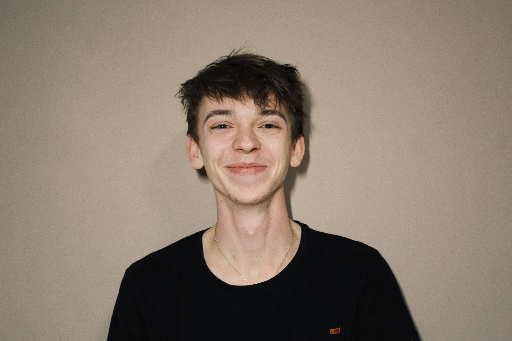

Volám sa Alexander Zicháček. Pochádzam z mediálne známej obce Melčíce-Lieskové,
v ktorej sa narodil Ján Smrek. Teda konkrétne z jej malebnej časti Dolina, ktorá aj tak spadá pod obec
Ivanovce.
Sú to proste Melčice len na katastri sú inteligenti. Študoval som na Gymnáziu Ľudovíta Štúra v Trenčíne, na
ktorom som bol
v informatickej triede, a tak nejak som sa potom ocitol tu. Vlastne nie hneď. Najskôr som išiel na Fakultu
informatiky a informačných technológií.
Tam som to ale vzdal hneď po prvom semestri, v ktorom som nespravil dva predmety a povedal som si, že tá
škola nebude pre mňa.
No a tak som tu. Na Fakulte elektrotechniky a informatiky. Na rovnakej škole, ale za to na lepšej fakulte.
Popri tom všetkom pracujem ako IT support v spoločnosti Yanfeng, v ktorej som ako site-admin v Trenčíne,
a zároveň ako barista a čašník v jednej kaviarni na Mierovom námestí v Trenčíne.
V súčasnosti študujem na FEI STU v Bratislave a tento semester mám tieto predmety: